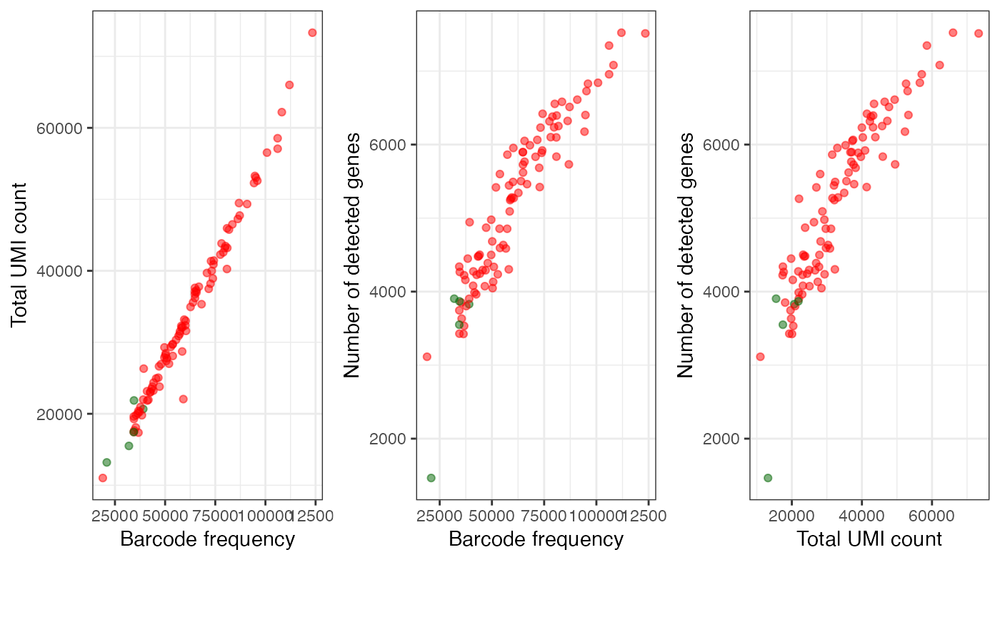

Abstract
alevinQC reads output files from alevin and generates summary reports.
Introduction
The purpose of the alevinQC package is to generate a summary QC report based on the output of an alevin (Srivastava et al. 2019) run. The QC report can be generated as a html or pdf file, or launched as a shiny application.
Installation
alevinQC can be installed using the BiocManager CRAN package.
if (!requireNamespace("BiocManager", quietly = TRUE)) install.packages("BiocManager") BiocManager::install("alevinQC")
After installation, load the package into the R session.
library(alevinQC)
Note that in order to process output from Salmon v0.14 or later, you need Alevin v1.1 or later.
Assumed output directory structure
For more information about running alevin, we refer to the documentation. When invoked, alevin generates several output files in the specified output directory. alevinQC assumes that this structure is retained, and will return an error if it isn’t - thus, it is not recommended to move or rename the output files from alevin. alevinQC assumes that the following files (in the indicated structure) are available in the provided baseDir (note that currently, in order to generate the full set of files, alevin must be invoked with the --dumpFeatures flag).
For alevin versions before 0.14:
baseDir |--alevin | |--featureDump.txt | |--filtered_cb_frequency.txt | |--MappedUmi.txt | |--quants_mat_cols.txt | |--quants_mat_rows.txt | |--quants_mat.gz | |--raw_cb_frequency.txt | |--whitelist.txt |--aux_info | |--meta_info.json |--cmd_info.json
For alevin version 0.14 and later:
baseDir |--alevin | |--featureDump.txt | |--raw_cb_frequency.txt | |--whitelist.txt (depending on how alevin was run) |--aux_info | |--meta_info.json | |--alevin_meta_info.json |--cmd_info.json
Check that all required alevin files are available
The report generation functions (see below) will check that all the required files are available in the provided base directory. However, you can also call the function checkAlevinInputFiles() to run the check manually. If one or more files are missing, the function will raise an error indicating the missing file(s).
baseDir <- system.file("extdata/alevin_example_v0.14", package = "alevinQC") checkAlevinInputFiles(baseDir = baseDir) #> [1] "v0.14"
Generate QC report
The alevinQCReport() function generates the QC report from the alevin output. Depending on the file extension of the outputFile argument, and the value of outputFormat, the function can generate either an html report or a pdf report.
outputDir <- tempdir() alevinQCReport(baseDir = baseDir, sampleId = "testSample", outputFile = "alevinReport.html", outputFormat = "html_document", outputDir = outputDir, forceOverwrite = TRUE)
Create shiny app
In addition to static reports, alevinQC can also generate a shiny application, containing the same summary figures as the pdf and html reports.
app <- alevinQCShiny(baseDir = baseDir, sampleId = "testSample")
Once created, the app can be launched using the runApp() function from the shiny package.
shiny::runApp(app)
Generate individual plots
The individual plots included in the QC reports can also be independently generated. To do so, we must first read the alevin output into an R object.
alevin <- readAlevinQC(baseDir = baseDir)
The resulting list contains four entries:
-
cbTable: adata.framewith various inferred characteristics of the individual cell barcodes. -
summaryTables: a list ofdata.frames with summary information about the full data set, the initial set of whitelisted cells and the final set of whitelisted cells, respectively. -
versionTable: amatrixwith information about the invokation of alevin. -
type: acharacterscalar indicating how alevinQC interpreted the alevin output directory.
head(alevin$cbTable) #> CB originalFreq ranking collapsedFreq nbrMappedUMI #> 1 GACTGCGAGGGCATGT 121577 1 123419 104128 #> 2 GGTGCGTAGGCTACGA 110467 2 111987 93608 #> 3 ATGAGGGAGTAGTGCG 106446 3 108173 88481 #> 4 ACTGTCCTCATGCTCC 104794 4 106085 81879 #> 5 CGAACATTCTGATACG 104616 5 106072 84395 #> 6 ACTGTCCCATATGGTC 99208 6 100776 81066 #> totalUMICount mappingRate dedupRate MeanByMax nbrGenesAboveZero #> 1 73312 0.843695 0.295943 0.00735194 7512 #> 2 66002 0.835883 0.294911 0.00783094 7522 #> 3 62196 0.817958 0.297069 0.00832595 7081 #> 4 57082 0.771824 0.302849 0.00619664 6956 #> 5 58547 0.795639 0.306274 0.00743685 7347 #> 6 56534 0.804418 0.302618 0.00947029 6841 #> nbrGenesAboveMean ArborescenceCount inFinalWhiteList inFirstWhiteList #> 1 1237 1.42034 TRUE TRUE #> 2 1238 1.41826 TRUE TRUE #> 3 1151 1.42262 TRUE TRUE #> 4 957 1.43441 TRUE TRUE #> 5 1238 1.44149 TRUE TRUE #> 6 1068 1.43393 TRUE TRUE
knitr::kable(alevin$summaryTables$fullDataset)
| Total number of processed reads | 7197662 |
| Number of reads with Ns | 35362 |
| Number of reads with valid cell barcode (no Ns) | 7162300 |
| Number of mapped reads | 4869156 |
| Percent mapped (of all reads) | 67.64913 |
| Number of noisy CB reads | 1003624 |
| Number of noisy UMI reads | 266 |
| Total number of observed cell barcodes | 188613 |
knitr::kable(alevin$summaryTables$initialWhitelist)
| Number of barcodes (initial whitelist) | 100 |
| Number of barcodes with quantification (initial whitelist) | 100 |
| Fraction reads in barcodes (initial whitelist) | 84.64% |
| Mean number of reads per cell (initial whitelist) | 60620 |
| Median number of reads per cell (initial whitelist) | 58132 |
| Mean number of detected genes per cell (initial whitelist) | 5163 |
| Median number of detected genes per cell (initial whitelist) | 5268 |
| Mean UMI count per cell (initial whitelist) | 33274 |
| Median UMI count per cell (initial whitelist) | 31353 |
knitr::kable(alevin$summaryTables$finalWhitelist)
| Number of barcodes (final whitelist) | 95 |
| Number of barcodes with quantification (final whitelist) | 95 |
| Fraction reads in barcodes (final whitelist) | 82.39% |
| Mean number of reads per cell (final whitelist) | 62118 |
| Median number of reads per cell (final whitelist) | 58725 |
| Mean number of detected genes per cell (final whitelist) | 5260 |
| Median number of detected genes per cell (final whitelist) | 5343 |
| Mean UMI count per cell (final whitelist) | 34091 |
| Median UMI count per cell (final whitelist) | 32028 |
knitr::kable(alevin$versionTable)
| Start time | Thu May 30 13:06:55 2019 |
| Salmon version | 0.14.0 |
| Index | /mnt/scratch5/avi/alevin/data/mohu/salmon_index |
| R1file | /mnt/scratch5/avi/alevin/data/10x/v2/mohu/100/all_bcs.fq |
| R2file | /mnt/scratch5/avi/alevin/data/10x/v2/mohu/100/all_reads.fq |
| tgMap | /mnt/scratch5/avi/alevin/data/mohu/gtf/txp2gene.tsv |
| Library type | ISR |
The plots can now be generated using the dedicated plotting functions provided with alevinQC (see the help file for the respective function for more information).
plotAlevinKneeRaw(alevin$cbTable)

plotAlevinBarcodeCollapse(alevin$cbTable)

plotAlevinQuant(alevin$cbTable)

plotAlevinKneeNbrGenes(alevin$cbTable)

Session info
sessionInfo() #> R version 3.6.3 (2020-02-29) #> Platform: x86_64-apple-darwin15.6.0 (64-bit) #> Running under: macOS Catalina 10.15.4 #> #> Matrix products: default #> BLAS: /Library/Frameworks/R.framework/Versions/3.6/Resources/lib/libRblas.0.dylib #> LAPACK: /Library/Frameworks/R.framework/Versions/3.6/Resources/lib/libRlapack.dylib #> #> locale: #> [1] en_US.UTF-8/en_US.UTF-8/en_US.UTF-8/C/en_US.UTF-8/en_US.UTF-8 #> #> attached base packages: #> [1] stats graphics grDevices utils datasets methods base #> #> other attached packages: #> [1] alevinQC_1.3.3 BiocStyle_2.14.4 #> #> loaded via a namespace (and not attached): #> [1] tximport_1.14.2 tidyselect_1.0.0 xfun_0.12 #> [4] purrr_0.3.3 colorspace_1.4-1 vctrs_0.2.4 #> [7] htmltools_0.4.0 yaml_2.2.1 rlang_0.4.5 #> [10] pkgdown_1.5.1.9000 pillar_1.4.3 later_1.0.0 #> [13] glue_1.4.0 RColorBrewer_1.1-2 lifecycle_0.2.0 #> [16] plyr_1.8.6 stringr_1.4.0 munsell_0.5.0 #> [19] gtable_0.3.0 htmlwidgets_1.5.1 memoise_1.1.0 #> [22] evaluate_0.14 labeling_0.3 knitr_1.28 #> [25] GGally_1.5.0 fastmap_1.0.1 crosstalk_1.1.0.1 #> [28] httpuv_1.5.2 fansi_0.4.1 highr_0.8 #> [31] Rcpp_1.0.4.6 xtable_1.8-4 backports_1.1.6 #> [34] scales_1.1.0 promises_1.1.0 DT_0.13 #> [37] BiocManager_1.30.10 desc_1.2.0 farver_2.0.3 #> [40] mime_0.9 fs_1.4.1 rjson_0.2.20 #> [43] ggplot2_3.3.0 digest_0.6.25 stringi_1.4.6 #> [46] bookdown_0.18 dplyr_0.8.5 shiny_1.4.0.2 #> [49] rprojroot_1.3-2 grid_3.6.3 cowplot_1.0.0 #> [52] cli_2.0.2 tools_3.6.3 magrittr_1.5 #> [55] tibble_3.0.0 crayon_1.3.4 pkgconfig_2.0.3 #> [58] MASS_7.3-51.5 ellipsis_0.3.0 shinydashboard_0.7.1 #> [61] assertthat_0.2.1 rmarkdown_2.1 reshape_0.8.8 #> [64] R6_2.4.1 compiler_3.6.3